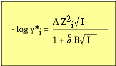
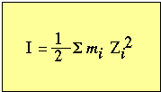
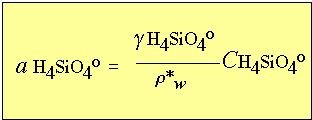
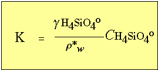
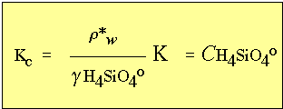

18 - Lecture notes for Clay Mineralogy
The Geochemistry of clay minerals
Suggested
reading:
Background reading on principles of chemistry
of natural waters.
Drever, James I., 1997 The Geochemistry
of Natural Waters: Surface and Groundwater Environments. Prentice Hall,
Upper Saddle River, NJ.436 P.
Langmuir, Donald, 1997 Aqueous Environmental
Geochemistry. Prentice Hall, Upper Saddle River, NJ.600 P.
Determination of activity coefficients - primary concern is with the determination of g for dissolved species
in interstitial solutions.
Several simplifying assumptions:
Assume that concentration (C) represents the sum of free ions plus
ion pairs and complexes.
For example for dissolved silica species:
C Si4+
= C H4SiO4o + C
H3SiO4- + C H2SiO42-
Case for dissolved potassium species:
C K+ = C K+ + C KSO4-
Case for dissolved calcium species:
C Ca2+
= C Ca2+
+ C CaSO4- + C CaCO3o + C CaHCO3+
Using this convention, the activity coefficient g becomes the total
activity coefficient gT, where:
gT = a /CT
This effect is important under conditions of high concentrations of dissolved
ions, such as in sea water.
* see Table below from Berner 1980. Total activity coefficients for the
major ions in seawater. T = 25°C, P = 1 atm., Salinity = 35 parts per
thousand.
Ion |
gT |
Cl-
|
0.681 |
Na+
|
0.652 |
Mg2+ |
0.215 |
SO42- |
0.121 |
Ca2+ |
0.201 |
K+
|
0.618 |
HCO3- |
0.500 |
CO32- |
0.030 |
The activity is therefore, going to be a function of the ionic strength
of the solution.
For ground water with total dissolved solids (i.e., salinity) up to the
levels of sea water the gT is determined
using the relationship
gT= (m / mT)g*
where:
- mT
= total molality for a given element
- m = molality
of the free ion
- g*
= activity give by the Debye-Hückel limiting law
The molality of the free ion is calculated from
mass balance expressions and ion-pair equilibrium expressions using an iterative
method.
The value ofg* is determined using the Debye-Hückel equation:

where:
- A, B = constants that are f (T).
- aoi= ion size parameter
for ion i
- Zi =
valance of the ion i
- I = ionic strength
Ionic strength is defined as:

where,
mi= molality of the ith species (mol . kg -1 )
A 1 m solution of CaCl2 will have
an ionic strength of
I = 1/2 [(1)(2)2 + (2)(1)2 ] =
3 m
* A general plot of activity coefficient versus ionic strength for some
common ion species.
taken from figure 2-1 from Berner 1971.
A simple common reaction that occurs in soils and sediments is that between
solid SiO2 and its ion complexes
in solution. At pH values below 8 the only effective form of dissolve silica
is orthosilisic acid.
Consider the reaction involving amorphous SiO2
:
SiO2
+ H2O <----> H4SiO4o
At 25° C:
K = a H4SiO4o = 2 x 103
where:
K = equilibrium solubility product.
recall that activity can be expressed in terms of concentration by the expression:

recall r*w is the
mass of water per volume of interstitial solution.
Therefore,

this simplifies the activity equation and introduces the concentration solubility
product

Saturation index
Once the ion activity product is known, then the actual ion activity product
can be used to create a dimensionless parameter called the saturation index
(W)
such that,
W=
IAP/K = ICP/Kc
where:
IAP = actual ion activity product
ICP = actual ion concentration product
K = equilibrium ion activity product (solubility product)
Kc = equilibrium ion concentration
product.
It is now possible to express the state of saturation for a particular reaction
by W , where:
if W > 1, then the solution is supersaturated.
if W = 1, then the solution is saturated.
if W < 1, then the solution is undersaturated.